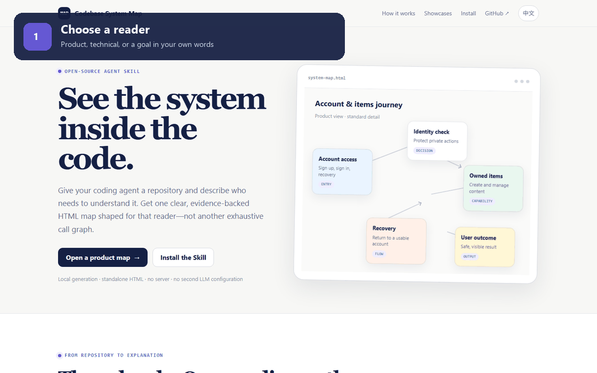

01
System overview
What the repository enables, its major responsibilities, and one clear end-to-end path.
Give your coding agent a repository and describe who needs to understand it. Get one clear, evidence-backed HTML map shaped for that reader—not another exhaustive call graph.
Local generation · standalone HTML · no server · no second LLM configuration
The map starts with the whole system, then lets readers descend only where the detail helps them make sense of the product or implementation.

What the repository enables, its major responsibilities, and one clear end-to-end path.
Meaningful boundaries, relationships, decisions, and outcomes—named in language the reader understands.
Purpose, input, output, tight source references, and real prompt excerpts when the codebase contains them.
There are no rigid “product” and “technical” templates. Your agent translates ordinary language into module boundaries, detail, terminology, prompts, relationships, and progressive disclosure.
Create this for product managers. Emphasize what each module does, user-visible outcomes, and real prompts. Simplify framework and database plumbing.
I’ll present capabilities and user journeys first, merge routine infrastructure, and keep source evidence available behind each node.
Make payment recovery more detailed. Show how the two prompts change the final reply, but hide ordinary API wiring.
I’ll split that module, add prompt-effect relationships, preserve the evidence, revalidate the full path, and replace the HTML only if delivery succeeds.
Each example uses a fixed public commit and includes its revisable JSON IR. Download the HTML and it still works offline.
Sign-up, sign-in, recovery, and owned items—without making the reader learn container, migration, or generated-client internals.
How declared tasks become queued work, how workers and the scheduler coordinate, and how retries, failures, and results move.
The run loop, tools, handoffs, guardrails, sessions, tracing, and a real handoff prompt for a cross-functional reader.
Clone once, copy the Skill into your local skills directory, then start a new agent session. Node.js 18+ is the only runtime requirement.
git clone https://github.com/Farmer-Zh/codebase-system-map.git
cd codebase-system-map
$skillPath = Join-Path $env:USERPROFILE ".codex\skills\codebase-system-map"
New-Item -ItemType Directory -Force $skillPath | Out-Null
Copy-Item ".\codebase-system-map\*" $skillPath -Recurse -Forcegit clone https://github.com/Farmer-Zh/codebase-system-map.git
cd codebase-system-map
mkdir -p "$HOME/.codex/skills/codebase-system-map"
cp -R codebase-system-map/. "$HOME/.codex/skills/codebase-system-map/"The Skill’s validator and delivery CLI use only Node.js built-ins. These components are bundled into each standalone HTML so diagrams work without a server or network connection.
The JavaScript wrapper and WebAssembly graph renderer embedded in every generated document.
The DOT layout engine compiled into Viz.js WebAssembly, producing the diagrams’ SVG geometry.
An XML parser included transitively in the Viz.js object-code distribution.
The website is implemented in plain HTML, CSS, and JavaScript. See the complete third-party notices and license texts.
Open source, MIT licensed, cross-platform, and designed to leave you with one file you can actually share.